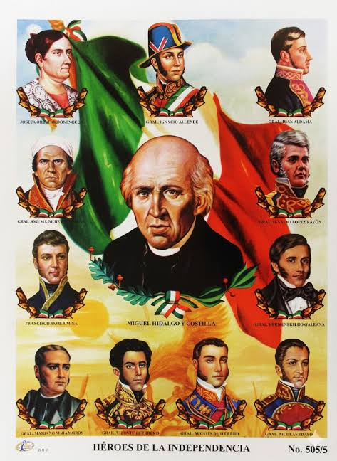

Texto: La Independencia inicio el 16 de septiembre de 1810 con el Grito de Dolores del Padre Miguel Hidalgo y Costilla. Hidalgo, Allende, Aldama y Josefa Ortiz de Dominguez fueron los iniciadores. Despues de 11 años de guerra, Mexico logro su independencia el 27 de septiembre de 1821 con la entrada del Ejercito Trigarante liderado por Agustin de Iturbide.
| Personaje | Papel |
| Miguel Hidalgo | Padre de la Patria |
| Jose Maria Morelos | Siervo de la Nacion |
| Vicente Guerrero | Consumacion |